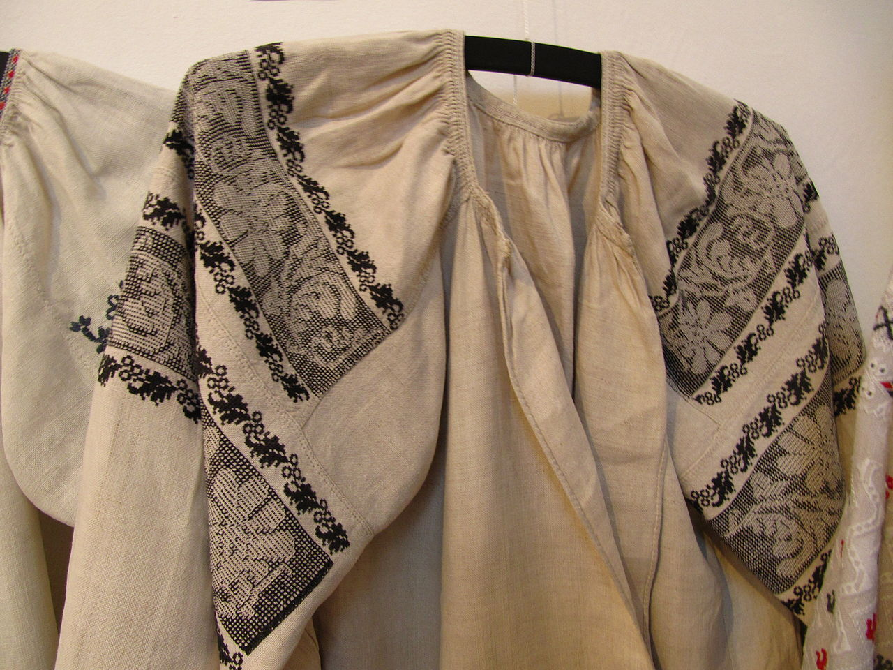
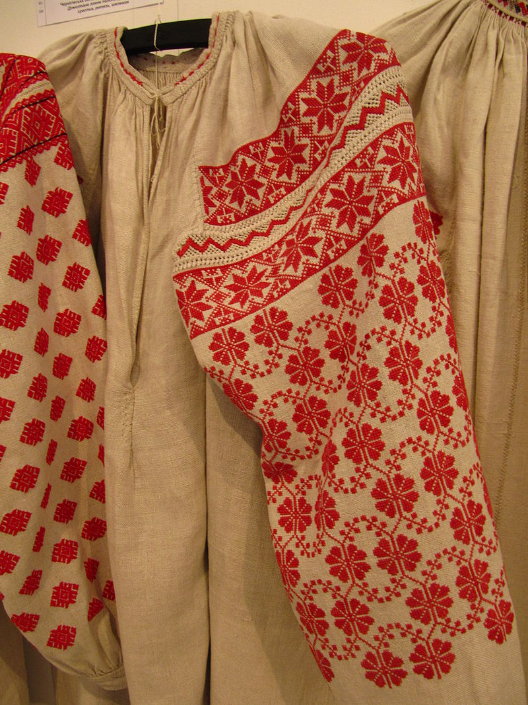
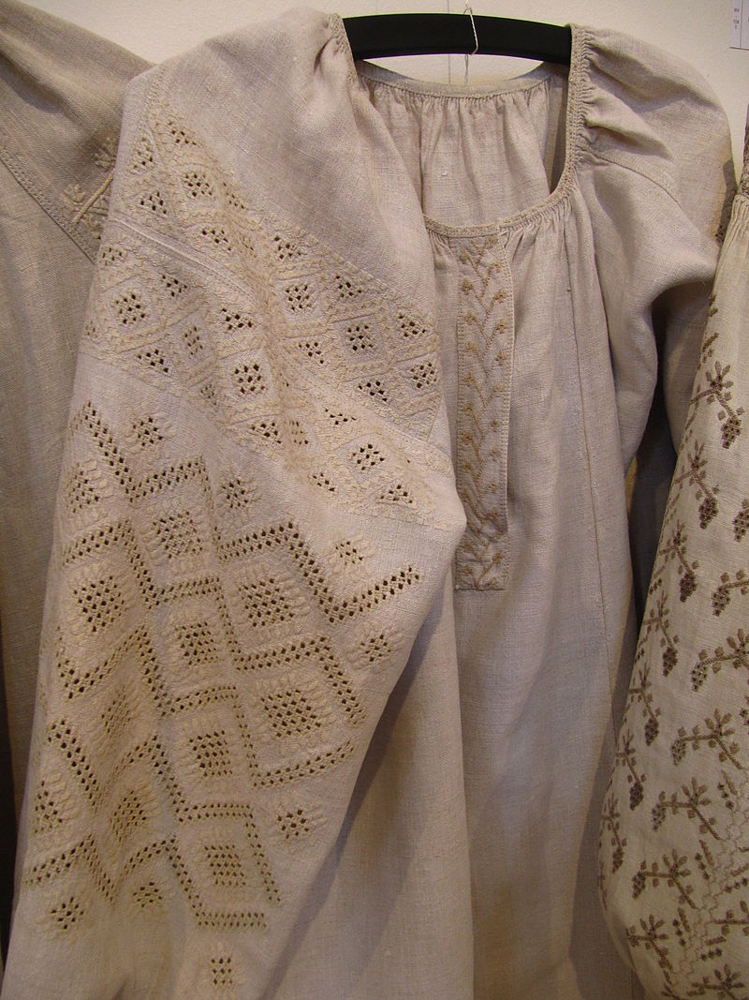

Різновиди вишиванок
Усі традиційні українські сорочки можна умовно поділити на два типи: лівобережні та правобережні, а також на сорочки до уставки (зі зборами) і без уставки (без зборів, тунікоподібні). На Лівобережжі крій жіночої та чоловічої сорочки був переважно «до уставки», який мав також два варіанти: з суцільнокроєнною уставкою (Київщина, Чернігівщина) та окремою уставкою (Полтавщина, Слобожанщина). На Запорожжі (в степу) були поширенні чоловічі сорочки чумацького та лоцманського типу, без уставки та без зборів. Вишивалися лівобережні та степові сорочки біллю, основними техніками були: мережка, вирізування та настилування (лиштва).
Правобережні сорочки чоловічого типу були так само «до уставки» і без уставки (без зборів). Чоловічі сорочки без уставки та з уставкою носилися в деяких місцевостях по штанах (Буковина, Гуцульщина, Бойківщина, Полісся, Придністров'я). Гірське населення, Буковина, а також і частково лівий берег Дністра носило сорочки по штанах, як і росіяни, болгари, чорногорці. Лемки і населення Закарпаття носило сорочки заправлені в штани. На Волині господарі носили сорочки теж по штанах, а наприкінці 19 ст. почaли заправляти в штани «по-міщанському» або по «шляхетському» звичаю. Жіночі сорочки Правобережжя були або без уставок («хлоп'янки» у дві пілки; Буковина, Покуття, Гуцульщина) це були переважно повсякденні сорочки або широкі безуставкові зі зборами (у три пілки, Поділля). Вишивалися такі сорочки чорними (Поділля) або червоними нитками (Волинь, Полісся, Покуття). Основними техніками були: «заволікання» (Волинь, Полісся) або «низина» (Поділля, Покуття, Гуцульщина, Буковина). В деяких місцевостях (Поділля, Покуття) вишивали також білими нитками, технікою вирізування та настилування.
Лівобережжя
Головна частина сорочки — станок, зшивається з трьох полотнищ, що бувають завширшки 40-50 см. На Полтавщині станок мав довжину 65-70 см. На вставки відмірялося полотно рукою, на одну чверть, приблизно 25 см і розрізалося навпіл. Вставки пришивалися ззаду двойним вистігом, а спереду пішвою. Станок з пришитими до нього вставками збирався вгорі на нитку. При збиранні зборів бралося по дві нитки (по чисниці). Для коміра відрізалася від полотна смуга, завширшки 2 см у всю ширину полотна, яка підгиналася з двох сторін. Спочатку комір пришивався з лицевої сторони, а потім з середини двічі або тричі вистігом. Інколи для обшивки коміра брали ткану стьожку і обшивали нею збори, а кінці залишали для зав'язування. Іноді на чоловічих і жіночих сорочках комір робили зубцями. На кінцях коміра робили прорізні або накидні петлі для стьожки, якою зав'язували сорочку. Рукава робили з усієї ширини полотна довжиною 50 см. До уставки рукава пришиваються вистігом, часто вистіг переривають пухликами (приб 15 см.). Пухлики можуть бути в один чи й сім рядів. Інколи пухлики пришиваються до вставок мережкою. Найбільше поширені пухлики у східній Полтавщині. Між рукавами та станком вставлялися ластки (12 на 12 см, які пришивалися прошвою. Внизу рукави збиралися як і комір і вшивалися в чохлу (2,5 см, іноді робили ширишою до 6 см). Старовинні сорочки Слобожанщини не відрізнялися від полтавських. Жіночі сорочки Чернігівщини були довші за полтавські і мали менші комірці, тобто при самій шиї та довгий розріз пазухи до 30 см. Рукав тут був часто суцільний з уставкою або пришивався до уставки особливим видом мережки — розшивкою. Такою мережкою з'єднувалися підрублені частини рукава і уставки. Такою ж розшивкою пришивалася ззаду уставка зі станком до коміра. Рукава були іноді в півтори пілки зшиті зверху розшивкою. Сорочки Дніпропетровщини подібні до описаних, але вони були довші (до 75 см). Підточка часто була з полотна впоперек. Загальна довжина сорочок була до 112 см. Сорочки Київщини відносяться до лівобережного типу і наближені більше до чернігівських. Вони мали суцільний зі вставками рукав. Для того щоб їх пришити в верхній частині станка робилися вирізи. Сорочки були довгі порівняно з ін. місцевостями (до 155 см). Розріз пазухи коротший, як в чернігівських, комір був ширший ніж в полтавських (3,5-4,5 см).
Старовинні чоловічі сорочки були кроєм майже такіж як і жіночі, довжиною до 90 см. Різниця полягала в тому, що чоловічі сорочки мали стоячий або виложистий комір. Він робився зі складеного вдвоє полотна. Комір оздоблювався вишивкою та зубцями. Чохли в чоловічих сорочках були широкими до 4 см. Рукави могли бути також не призбирані в чохлу, а простими широкими. Поряд з цим типом чоловічої сорочки був ще один тип — чумацька або лоцманська (степова). Такі сорочки шилися з перегнутого пополовині полотна, до якого з боків пришивалися бочки з половини полотнища, зверху вони були зрізані в вигляді трикутника. Ці сорочки були довгими (до 100 см.). Рукави робилися з полотна перегорнутого по довжині або впоперек. Здебільшого рукави були поперечні і пришивалися до станка особливим видом мережки. Бочки до станка пришивалися пішвою. Розріз в таких сорочках був довгий (до 40 см.). Виріз для коміра підрізається кругло, на переді нижче. Комірець до такої сорочки був вузьким (1-1,5 см.) складений з тканини вдвоє і пришивався двійним вистігом. Такі комірці завжди зубцьовані і вишиті дрібними узорами. Такі сорочки часто мали підоплеки — куски полотна пришиті до плечей так, що звисають на груди і на спину. Ці сорочки були поширені по всій Україні.
Сіверщина та Чернігівщина
Чоловіки носили короткі сорочки з конопляного або лляного полотна домашнього виробництва. Сорочки були кроєм до уставки, призбирані біля коміра. Комір сорочок був відкладним. Комір пов'язувався гарусною стрічкою або стьонжкою. Чохли та надпліччя вишивали інколи мережкою, а комір (комняр) заполоччю по таких візерунках: сухарики, заступці, гапличок, сливки, гусяче око, маківки, карточки. Сорочка носилася всередину широких штанів. Якщо чоловіки виходили з дому, то обов'язково по сорочці одягали кобеняк.
«В м. Вереміївці спостерігається деяке повернення до старовини: замість сорочок з відкладними комірами пришитих до зборів, тут починають знову носити сорочки з маленькими стоячими комірами пришитими до гладкої спини, вишитих у парубків власноручно заполоччю та чорним шовком.»
Жінки носили сорочки довжиною поза коліна з домашнього полотна. В Козелецькому повіті носили сорочки довші. Крій сорочки надзвичайно простий: брали два полотнища зшивaли посередині, зверху пришивали два прямокутні полики, до яких пришивали призбирані рукава. Святкові сорочки шили з крамного полотна. Виріз призбирують та обшивають або вишитою смужкою або купленою тасьмою. Рукава та полики в сорочках завжди вишиті, а в святкових сорочках ще й помережині. Вишивають білими нитками технікою настилування, інколи й червоними. Вишивки надзвичайно вишукані. Вишивають на рукаві зверху широку смугу від якої вниз ідуть поздовжні смуги або окремі елементи вишивки розташовані по пелені рукава у вигляді решітки. Узори мережки: метелик, прутик, двоголкова, триголкова. Вишивки та мережки складаються завжди з прямих ліній. Подолки сорочок завжди помережині. Поверху сорочки виходячи на вулицю одягають корсетки. В кін. 19 ст. вишивки помінялись:
"вишивають уже не по самому полотні, а по канві, червоними і чорними нитками. Узори уже не свого власного домислу, а запозичені з друкованих збірників — великі квіти, побутові картинки і т. ін. Взагальному виходить набагато грубше ніж раніше (1890 р., М. Степовий)


Полтавська вишиванка
Сорочки на Полтавщині вишиваються головним чином лляними білими нитками (біллю), дуже рідко лляними червоними або попелисто-синіми. Пазухи білих сорочок у старих зразках прикрашалися білим візерунком, виконаним лиштвою. Візерунок обводився чорними або кольоровими смугами. Техніка вишивання — шов «уперед голкою», шов «за голкою».
Жіноча сорочка. На Полтавщині сорочки власного коміра не мали, замість нього виріз збирався складочками або «пухликами» та обшивався тоненькою полотняною «стьожкою». Рукава були широкі, а нижній край збирали та вшивали в «чохлу». Жіночі сорочки вишивалися переважно білими та «сировими» (невибілиними) нитками. Візерунки були на вставках, рукавах та пелені. В сорочках переважали геометричні чи рослині геометризовані мотиви. За технікою виконання візерунки розподілялися приблизно на: вставки лиштвою або вирізуванням з лиштвою, рукава — вирізуванням, а пелена пруткованням або мережкою. Часто траплялося, що вся сорочка вишита лиштвою. Зустрічалися сорочки, де поряд з лиштвою до білої нитки додавали кольорову, переважно червону, а іноді вся сорочка вишивалася кольоровою ниткою. В таких випадках уставки та пелена вишивалися занизуванням, а рукава лиштвою. З кольорів найбільш поширеними були чисто червоний або попелясто-синій. Вишивання сорочок квітками, червоно — чорною заполоччю (хрестиком) почалося з поч. 20-го ст.
Чоловіча сорочка. Чоловічі сорочки шилися з домашнього полотна. За кроєм поділялися на два типи: перший тип подібний на жіночу: виріз призбирувався на нитку і до нього пришивали високий м'який комір. Рукава були також широкі з ластками під плечима, зібрані внизу та вшиті в чохли. Такі сорочки подібно жіночим мали вставки та шились лиштвою. Таку ж лиштву шили і на чохлах. Другий тип — це чумацька сорочка, вона шилася на дві пілки з примережиними по бочках «бочками» (п'ятикутниками). Рукава в таких сорочках були прямі (без зборів). Комір в чумацьких сорочках був низеньким 1-2 см. Чумацькі сорочки завжди добірно вишивалися. Комір здебільшого — лиштвою, пазуха — вирізуванням, а рукава вирізуванням з лиштвою.
Візерунки. Візерунки: вирізування на чотири дірочки, вирізування косе, вирізування книшикове, вирізування хрещове, вирізування з клинцями, вирізування по одній дірочці, вирізування з хмеликом, вирізування книшикове, вирізування клинчасте, вирізування орлове, лиштва хмелева, лиштва соснова, гілки, лиштва метеликова, клинчаста, пупкова, баранячі ріжечки, морока, верхоплут, виколювання, мережки, ключі і зірки, зірка, клинова, купочкова, ляльки, занизування, вирізування з клинцями, вирізування з верхоплутом, дзвоники, жучки. (За описом Я. Риженко)
